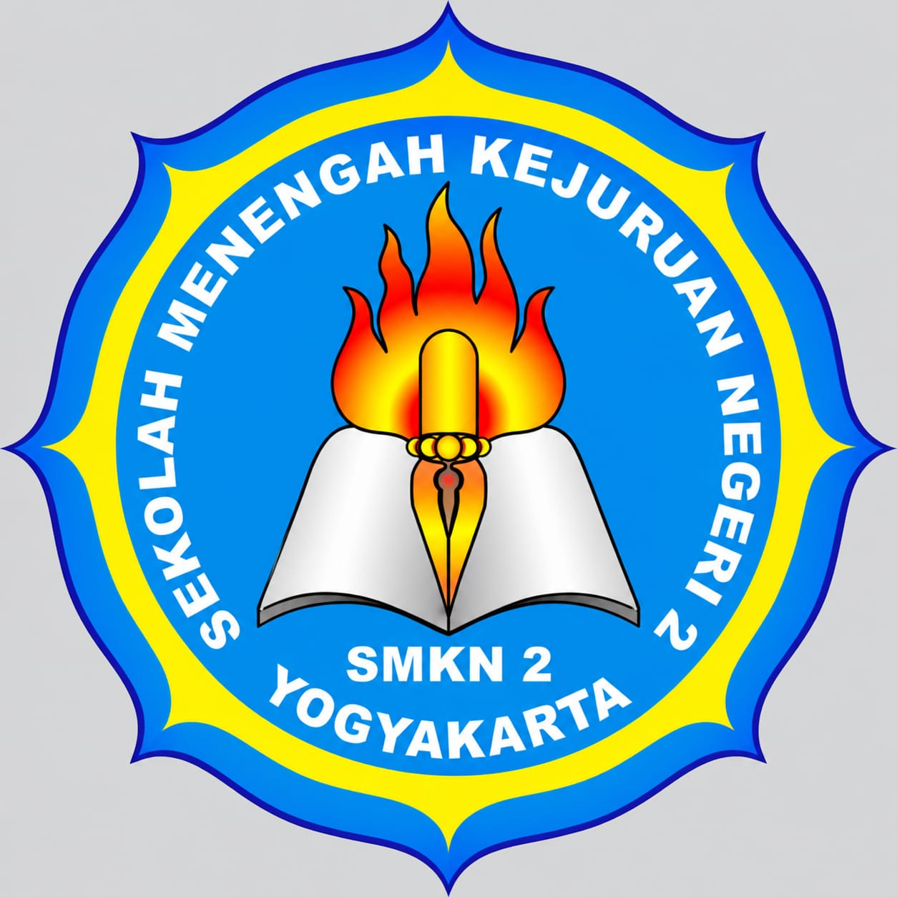

| V | Davin Fernando | Beranda | Profil | Galerry | Artikel | Buku Tamu |
|---|---|---|---|---|---|---|
 |
|
|---|---|
| Saya Davin Fernando, seorang siswa SMK 2 yang membagikan cerita dan pemikiran seputar tentang pribadi saya. Web ini adalah tempat saya mendokumentasikan perjalanan, ide, dan hal-hal yang saya pelajari. Semoga Anda menemukan inspirasi atau setidaknya bacaan yang menarik di sini. Mari berteman lebih dekat! Silakan jelajahi halaman blog saya atau sapa saya melalui Instagram atau Tiktok. | |
| Semoga Anda Menyukai Web Saya dan Jangan Lupa Beri Saran atau Kritik di Buku Tamu |
|
Profil Profil pribadi saya |
|
Galeri Foto pribadi, keluarga, teman |
|
Artikel Artikel tentang saya |
|
Buku Tamu Berikan saran atau kritik di buku tamu |